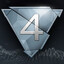
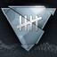
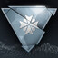

Assassin's Creed® Rogue Remastered
Ubisoft Entertainment
Original Release November 11, 2014
Release March 20, 2018

Blood
Strong Language
Violence
Experience the darkest chapter in Assassin’s Creed lore yet, remastered for next-gen platforms. Assume the role of Shay, an Assassin during the French and Indian War, and witness the cataclysmic events that force him to betray the Brotherhood in order to prevent further catastrophe. Become the most feared Assassin hunter in history as you battle former allies as a member of the Templars.
Full 100% Synchronization Guide and Platinum Trophy Walkthrough for the Assassin's Creed® Rogue Remastered Video Game.
Playing the game in this order is merely just suggested; I do not force you to play in this order, but it is highly recommended.
This guide is compiled into chapters in accordance with pivotal moments in the storyline of Assassin's Creed® Rogue Remastered.
 Spoiler Warning: Plot details, ending details, or both are in the text and images which follows
Spoiler Warning: Plot details, ending details, or both are in the text and images which follows
Progress Tracker
To complete 100% Full Synchronization with Assassin's Creed Rogue Remastered, you have to complete all Main Sequences, Secondary Sequences, Collectibles, and Activities. You can use the Progress Tracker in the pause menu to track how much progress you have completed towards 100% Synchronization. Please note that all Present Day segments throughout the story is tracked through the achievements in this guide. It is recommended to complete secondary missions after completion of the main storyline as some features for 100% sync are locked until you complete a specific sequence. Because Assassin's Creed Rogue is a large open world game, it is also recommended to synchronize with all viewpoints and visit all locations as early as possible to make traveling easier.
Sequences
| Setting | Memory | Full Synchronization Optional Objectives | |||||
|---|---|---|---|---|---|---|---|
| Sequence 01 | The North Atlantic, January 1752 | 01 | The Way The Wind Blows | remain undetected by british guards kill all british guards | | ||
| A Rude Awakening | Did I do that?  | ||||||
| Davenport Homestead, March 1752 | 02 | Lessons and Revelations | remain undetected during Hope's lesson complete Liam's lesson in under 40 seconds | | |||
| 03 | Tinker Sailor Soldier Spy | do not lose more than 50% health during boarding sink the ships within three minutes | | ||||
| River Valley, July 1752 | 04 | By Invitation Only | kill Washington while blended make enemies berserk with the air rifle: 4/4 | | Halcyon days | ||
| Sequence 02 | North Atlantic, May 1754 | 01 | One Little Victory | kill Smith with an air assassination destroy three gunboats with the Puckle gun | | ||
| Albany, July 1754 | 02 | We The People | sneak into the congress undetected kill Wardrop with an air assassination | | |||
| 03 | Fiat Lux | do not get detected do not swim | | ||||
| Lisbon, Portugal September 1755 | 04 | Kyrie Eleison | |||||
| 05 | Freewill | do not take any damage do not kill anyone | | The end of youth | |||
| Incomplete Memories | 01 | RGVjb25zdHJ1Y3RlZA0K | |||||
| Damage Control | He's not dead, is he? | ||||||
| Sequence 03 | New York, June 1756 | 01 | The Color of Right | do not get stunned by smoke do not get shot | | ||
| 02 | A Long Walk and a Short Drop | prevent Gist's hanging by shooting the rope blow up three barrels with firecrackers 3/3 | | ||||
| 03 | Circumstances | hang the key holder using the rope dart kill Le Chasseur without taking any damage | | ||||
| 04 | Keep Your Friends Close | kill three guards with a single grenade put ten guards to sleep: 10/10 | | Making new friends | |||
| Sequence 04 | North Atlantic, August 1757 | 01 | Honour and Loyalty | do not take any damage do not get detected | | ||
| 02 | Armour and Sword | ||||||
| 03 | Scars | stay out of combat kill Kesegowaase using a Puckle gun | |  Picking teams  | |||
| High Places |  A worthy cause A worthy cause | ||||||
| Incomplete Memories | 02 | UHJvdGVjdGlvbg0K | kill criminals with air assassinations: 3/3 kill all criminals before time runs out | | |||
| Sequence 05 | North Atlantic, June 1758 | 01 | Men o' War | sink ten ships using mortars take no damage from fireships | | ||
| Vielle Carriere, 1758 | 02 | Bravado | do not let the Morrigan get hit by mortar fire don't kill anyone except Adéwalé | | One legend dies, and one is born | ||
| Sequence 06 | New York, October 1759 | 01 | The Heist | loot every chest in the fort lockpick two doors | | ||
| 02 | Caress of Steel | do not get damaged by the poison clouds stay out of combat | | ||||
| 03 | No Laws But Our Own | avoid open conflict do not kill any guards | | ||||
| 04 | Cold Fire | do not collide with any icebergs do not take any damage | | ||||
| The Far North, March 1760 | 05 | Non Nobis Domine | do not hit energy beam walls do not get shot by Liam | |  Brotherhood broken Brotherhood broken | ||
| Understanding | Sending a message | ||||||
| Incomplete Memories | Versailles, December 1776 | 03 | QXNzYXNzaW5hdGIvbg0K |  No page unturned No page unturned | |||
|  Achieve full synchronization | |||||||
 Templar then; Templar now  |
Secondary Sequences
 Master of the North Atlantic
Master of the North Atlantic Collectibles
| Location | |||
|---|---|---|---|
| New York | Waterfront | ||
| Lower Manhattan | |||
| East Village | |||
| King's Farm | |||
| Greenwich | |||
| Stuyvesant's Farm |